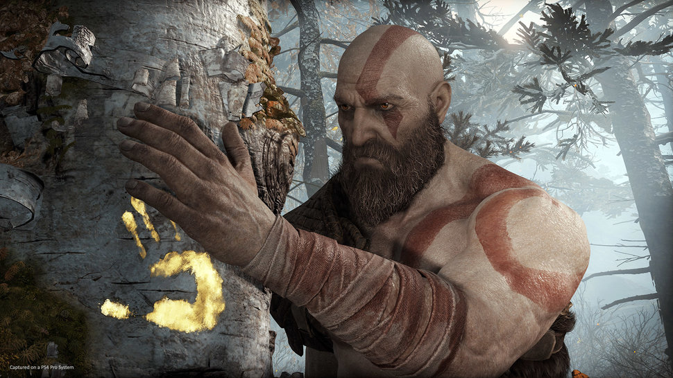
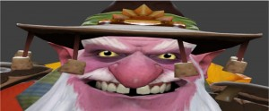
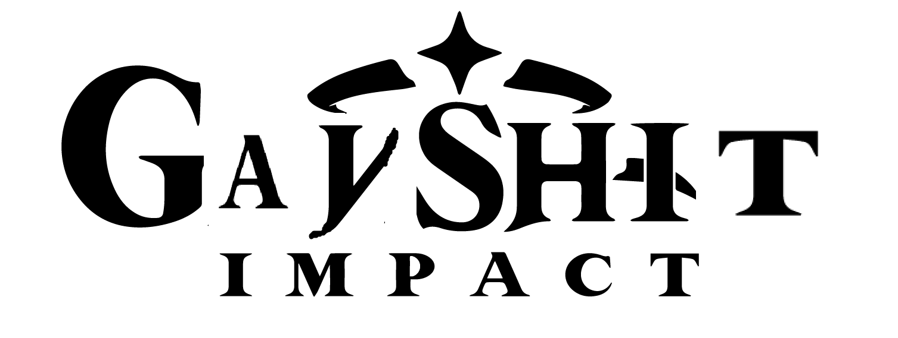
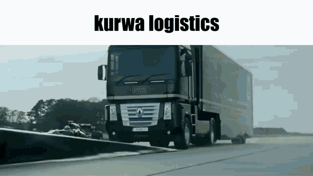
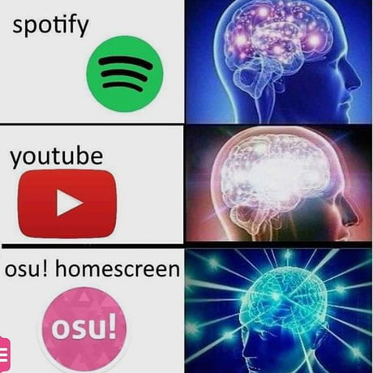

My GAY
| God of War |
Dota 2 |
Gayshit impact |
Euro Track Simulator 2 |
OSU! |
| (1) |
(2) |
(3) |
(4) |
(5) |
|  |
 |
 |
 |
 |
| God of War — медіафраншиза, зосереджена навколо однойменної серії відеоігор жанрів Hack and slash і Action-adventure, створених за мотивами давньогрецької міфології. Головним героєм усіх ігор серії є Кратос — спартанський генерал, який кидає виклик богам. |
Dota 2, Defense of the Ancients — багатокористувацька відеогра в піджанрі MOBA, автономне продовження ідей карти DotA для гри Warcraft III: Reign of Chaos і її модифікації Warcraft III: The Frozen Throne. |
Основа «Genshin Impact» — це «гача-гра», система колекціонування та розвитку персонажів, які випадають з різною ймовірністю. |
Euro Truck Simulator 2 — відеогра в жанрі симулятора водія-далекобійника з елементами економічної стратегії. Розроблена і випущена чеською компанією SCS Software 2012 року. Це друга частина серії Truck Simulator. |
osu! — безплатна музична ритм-гра, написана мовою C# у 2007 році. Ігровий процес схожий з Osu! Tatakae! Ouendan, Elite Beat Agents і Taiko no Tatsujin. |